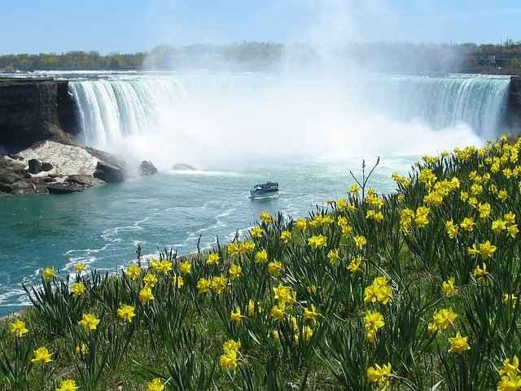
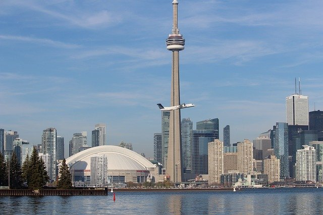

Algonquin Provincial Park is in southeastern Ontario, Canada. Its forests, rivers and numerous lakes, including the large Lake of Two
Rivers, are home to moose, bears and common loons.
Ontario grows almost 40 varieties of grapes including popular vinifera varietals such as Chardonnay, Riesling, Cabernet, Merlot and
Pinot Noir. Baco Noir, Seyval Blanc and Vidal are native-European hybrids.
Casa Loma is a Gothic Revival style mansion and garden in midtown Toronto, Ontario, Canada, that is now a historic house museum and
landmark. It was constructed from 1911 to 1914 as a residence for financier Sir Henry Pellatt. The architect was E. J. Lennox, who
designed several other city landmarks.
The Gooderham Building, also known as the Flatiron Building, is an historic office building at 49 Wellington Street East in Toronto,
Ontario, Canada.
The Canada goose is a large wild goose species with a black head and neck, white cheeks, white under its chin, and a brown body. Native
to arctic and temperate regions of North America, its migration occasionally reaches northern Europe.
Lake Ontario is one of the five Great Lakes of North America. It is surrounded on the north, west, and southwest by the Canadian
province of Ontario, and on the south and east by the American state of New York, whose water boundaries meet in the middle of the
lake.

Niagara Falls, Ontario, is a Canadian city at the famous waterfalls of the same name, linked with the U.S. by the Rainbow Bridge. Its
site on the Niagara River's western shore overlooks the Horseshoe Falls, the cascades' most expansive section. Elevators take visitors
to a lower, wetter vantage point behind the falls. A cliffside park features a promenade alongside 520-ft.-high Skylon Tower with an
observation deck.
Ottawa is Canada's capital, in the east of southern Ontario, near the city of Montréal and the U.S. border. Sitting on the
Ottawa River, it has at its centre Parliament Hill, with grand Victorian architecture and museums such as the National Gallery of
Canada, with noted collections of indigenous and other Canadian art. The park-lined Rideau Canal is filled with boats in summer and
ice-skaters in winter.
Five major varieties of pear are grown in Ontario: Bartlett (the overwhelming favourite), Clapp's Favourite, Anjou, Bosc and Flemish
Beauty.
Parliament Hill, colloquially known as The Hill, is an area of Crown land on the southern banks of the Ottawa River in downtown Ottawa,
Ontario, Canada. Its Gothic revival suite of buildings is the home of the Parliament of Canada and has architectural elements of
national symbolic importance.
Rogers Centre, originally named SkyDome, is a multi-purpose stadium in Downtown Toronto, Ontario, Canada, situated just southwest of
the CN Tower near the northern shore of Lake Ontario. Opened in 1989 on the former Railway Lands, it is home to the Toronto Blue Jays
of Major League Baseball.

Toronto, the capital of the province of Ontario, is a major Canadian city along Lake Ontario’s northwestern shore. It's a dynamic
metropolis with a core of soaring skyscrapers, all dwarfed by the iconic, free-standing CN Tower. Toronto also has many green spaces,
from the orderly oval of Queen's Park to 400-acre High Park and its trails, sports facilities and zoo.
{kind=link}
{kind=link}
{kind=link}
{kind=link}
{kind=link}
{kind=link}
{kind=link}
{kind=link}
{kind=link}
{kind=link}
{kind=link}
{kind=link}